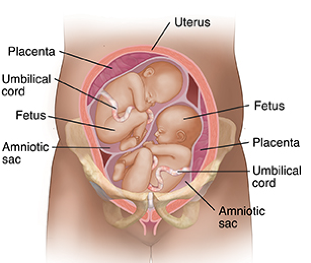

Multiple Pregnancy for beginners
This page will help you to understand what is Multiple Pregnancy, what are it causes, how it happen, and the risk associated to it.
General Description
Here is a description of Multiple Pregnancy from My Health Alberta web page:[1]
"
A multiple pregnancy means that there are two or more babies in the uterus. A pregnancy of twins or more is considered to be high-risk. Problems are more common in multiple pregnancies than in pregnancies of one fetus (singleton pregnancy). The babies in a multiple pregnancy may be identical or fraternal.Identical Siblings
Babies that come from the same egg are called identical. This happens when one egg is fertilized by one sperm, and the fertilized egg then splits into two or more embryos.
Experts think that the process that results in identical siblings happens by chance. It isn't related to the parents' age, race, or family history.
If the babies you're carrying are identical, the siblings:
- Are all of the same sex, either all boys or all girls.
- All have the same blood type.
- Probably will have the same body type and the same colour skin, hair, and eyes. But they may not look exactly the same. They also won't have the same fingerprints.
Fraternal Siblings
Babies that come from different eggs are called fraternal. This happens when two or more eggs are fertilized by different sperm.
Fraternal twins tend to run in families. This means that if anyone in your family has had fraternal twins, you're more likely to have them too.
If the babies you're carrying are fraternal, the siblings:
- May be of different sexes.
- May have different blood types.
- May look different from each other or may look the same, as some brothers and sisters do.
"
Causes of Multiple Pregnancy
Here is a description of causes of multiple pregnancy from Standford Medicine Children's Health web page:[2]
"
Many factors are linked to having a multiple pregnancy. Naturally occurring factors are:
- Heredity. A family history of multiple pregnancy raises the chances of having twins.
- Older age. Women older than 30 have a greater chance of multiple conception. Many women today are waiting to have children until later in life. They may have twins as a result.
- High parity. Having 1 or more previous pregnancies, especially a multiple pregnancy, raises the chances of having multiples.
- Race. African-American women are more likely to have twins than any other race. Asian and Native Americans have the lowest twinning rates. White women, especially those older than 35, have the highest rate of higher-order multiple births (triplets or more).
Other factors that have greatly raised the multiple birth rate in recent years are reproductive technologies such as:
- Ovulation-stimulating medicines, such as clomiphene citrate and follicle stimulating hormone (FSH). These help produce many eggs. If fertilized, they can result in multiple babies.
- Assisted reproductive technologies. In vitro fertilization (IVF) and other methods may help couples get pregnant. These technologies often use ovulation-stimulating medicines to produce multiple eggs. These are then fertilized in the lab and returned to the uterus to grow.
"
How Does Multiple Pregnancy Happen?
Here is a description of how multiple pregnancy happen from the University of Rocchester Medical Center web page:[3]
"

Multiple pregnancy often happens when 2 or more eggs are fertilized and implant in the uterus. This is called fraternal twinning. These babies can be the same sex or the opposite sex. Fraternal multiples are simply siblings conceived at the same time. But just as siblings often look alike, fraternal multiples may look very similar. Fraternal multiples each have a separate placenta and amniotic sac.Sometimes 1 egg is fertilized and then splits into 2 or more embryos. This is called identical twinning. When this happens, the babies are the same sex. Identical multiples are genetically the same. They often look so much alike that even parents have a hard time telling them apart. But these children have different personalities and are distinct people. Identical multiples may have individual placentas and amniotic sacs. Most share a placenta with separate sacs. In rare cases, identical twins share 1 placenta and a single amniotic sac.
"
Risks
Here is a description of why multiple pregnancy is a concern from the Johns Hopkins Medicine web page:[4]
"
Being pregnant with more than one baby is exciting and is often a happy event for many couples. However, multiple pregnancy has increased risks for complications. The most common complications include the following:
- Preterm labor and birth
- Gestational hypertension
- Anemia
- Birth defects
- Miscarriage
- Twin-to-twin transfusion syndrome
- Abnormal amounts of amniotic fluid
- Cesarean delivery
- Postpartum hemorrhage
"
Parents of Multiples
Parents and caregivers of multiples face some unique challenges, but there's no need to go it alone.
You are not alone; you are not the first and you are not going to be the last. Connecting with others will be beneficial for you and others you can receive tips and advice from people who knows what is like, eve you can share your own experiences as well.
Here is the link of the Multiple Births Canada, it is a lot of information that could be benefical for you: Multiple Births Canada
FAQ's
Whats is the "Vanishing Twin Syndrome"?
Sometimes, very early in a twin pregnancy, one of the fetuses "disappears." This is referred to as the "vanishing twin syndrome."
How frequently occurs a multiple birth?
Multiple births are much more common today than they were in the past. According to the US Department of Health and Human Services, the twin birth rate has increased by over 75% since 1980, and triplet, quadruplet, and high-order multiple births have increased at an even higher rate.
What are the special names of Multiple Births?
| Babies | Term Used |
|---|---|
| 1 | Singleton |
| 2 | Twins |
| 3 | Triplets |
| 4 | Quadruplets (Quads) |
| 5 | Quintuplets (Quints) |
| 6 | Sextuplets |
| 7 | Septuplets |
| 8 | Octuplets |
| 9 | Nonuplets |